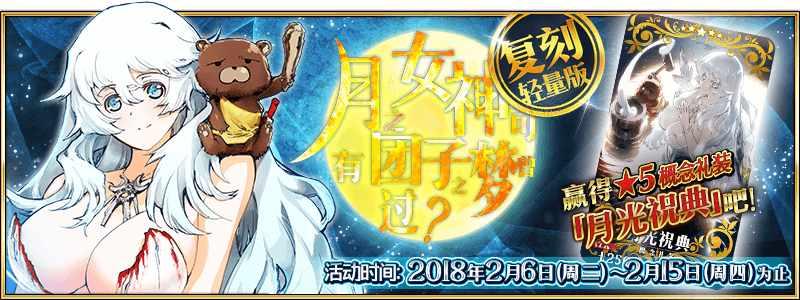

本頁面資訊僅供參考，實際情況請以遊戲內資料為準。
由於直接使用官方翻譯，可能會與其他站內翻譯相異，敬請見諒。
其他公告內容請參照日版當時公告翻譯。

- 主線關卡
-
賞月 第1話 安東尼一行 消耗AP 推薦Lv. 初次報酬 開放條件 5 10 9/3 13:00~9/13 12:59
通過：賞月 第0話 月下的獵人
入手：特選糰子x10〉〉 職階傾向 QP Exp 絆 


2,800 550 230 Wave 1 1  Lv.13 瑪莉．安東尼 HP21,304
Lv.13 瑪莉．安東尼 HP21,3042  Lv.10 德翁 HP13,558
Lv.10 德翁 HP13,5583  Lv.10 桑松 HP10,050
Lv.10 桑松 HP10,050〉〉 職階傾向 QP Exp 絆 
2,800 550 230 Wave 1 1  Lv.15 阿瑪迪斯假面 HP27,785
Lv.15 阿瑪迪斯假面 HP27,7852 Lv.10 桑松 HP10,0503 Lv.10 德翁 HP13,558賞月 第2話 海岸線之戰 消耗AP 推薦Lv. 初次報酬 開放條件 5 15 9/3 13:00~9/13 12:59
通過：賞月 第1話 安東尼一行
入手：特選糰子x40〉 職階傾向 QP Exp 絆 3,800 1,100 330 Wave 1 1  Lv.25 聖喬治 HP36,255
Lv.25 聖喬治 HP36,2552 Lv.15 瑪爾大 HP20,1773  Lv.15 小次郎 HP12,124
Lv.15 小次郎 HP12,124賞月 第3話 荒城之月 消耗AP 推薦Lv. 初次報酬 開放條件 5 20 9/3 13:00~9/13 12:59
通過：賞月 第2話 海岸線之戰
入手：特選糰子x100〉〉 職階傾向 QP Exp 絆 
4,800 1,910 430 Wave 1 1 Lv.20 凱撒 HP38,9362  Lv.20 卡利古拉 HP47,013
Lv.20 卡利古拉 HP47,013〉〉 職階傾向 QP Exp 絆 4,800 1,910 430 Wave 1 1 Lv.8 恐懼飛龍 HP5,7002  Lv.25 阿蒂拉 HP62,872
Lv.25 阿蒂拉 HP62,8723 Lv.8 恐懼飛龍 HP5,7004 Lv.8 恐懼飛龍 HP5,7005 Lv.8 恐懼飛龍 HP5,7006 Lv.8 惡魔飛龍 HP8,2947 Lv.8 惡魔飛龍 HP8,294賞月 第4話 月之女神可曾有過糰子之夢 消耗AP 推薦Lv. 初次報酬 開放條件 5 25 29/3 13:00~9/13 12:59
通過：賞月 第3話 荒城之月
入手：特選糰子x200〉 職階傾向 QP Exp 絆 
5,800 2,770 530 Wave 1 1  Lv.33 俄里翁小姐 HP98,989
Lv.33 俄里翁小姐 HP98,989 - 自由關卡
-
賞月 糰子蒐集初級 消耗AP 推薦Lv. 初次報酬 開放條件 10 10 59/3 13:00~9/13 12:59
通過：賞月 第0話 月下的獵人∞ 職階傾向 QP Exp 絆 1,400 275 115 Wave 1 1  Lv.3 狼人 HP1,151
Lv.3 狼人 HP1,1512 Lv.3 狼人 HP1,151Wave 2 1 Lv.5 狼人 HP1,7272 Lv.5 狼人 HP1,7273 Lv.5 狼人 HP1,727Wave 3 1 Lv.10 狼人 HP6,3322 Lv.15 狼人 HP18,4223 Lv.10 狼人 HP6,332賞月 糰子蒐集中級 消耗AP 推薦Lv. 初次報酬 開放條件 20 25 59/3 13:00~9/13 12:59
通過：賞月 第1話 安東尼一行∞ 職階傾向 QP Exp 絆 2,900 1,385 265 Wave 1 1  Lv.5 龍牙兵 HP3,351
Lv.5 龍牙兵 HP3,3512 Lv.5 龍牙兵 HP3,3513 Lv.5 龍牙兵 HP3,351Wave 2 1 Lv.8 龍牙兵 HP5,0272 Lv.8 龍牙兵 HP5,0273 Lv.8 龍牙兵 HP5,027Wave 3 1 Lv.25 瑪莉．安東尼 HP30,7582 Lv.20 德翁 HP28,7943 Lv.20 桑松 HP21,399賞月 糰子蒐集上級 消耗AP 推薦Lv. 初次報酬 開放條件 30 40 59/3 13:00~9/13 12:59
通過：賞月 第2話 海岸線之戰∞ 職階傾向 QP Exp 絆 4,400 5,690 415 Wave 1 1 Lv.4 鬼魂 HP1,6242 Lv.6 恐怖鬼魂 HP5,1443 Lv.4 鬼魂 HP1,624Wave 2 1 Lv.8 恐怖鬼魂 HP5,6412 Lv.20 恐怖鬼魂 HP13,7633 Lv.8 恐怖鬼魂 HP5,641Wave 3 1 Lv.40 聖喬治 HP50,2592 Lv.30 瑪爾大 HP48,9593 Lv.30 小次郎 HP29,519賞月 糰子蒐集超級 消耗AP 推薦Lv. 初次報酬 開放條件 40 50 39/3 13:00~9/13 12:59
通過：賞月 第3話 荒城之月∞ 職階傾向 QP Exp 絆 5,400 10,190 515 Wave 1 1  Lv.30 惡魔 HP87,900
Lv.30 惡魔 HP87,900Wave 2 1 Lv.40 凱撒 HP49,3932 Lv.50 阿蒂拉 HP68,5853 Lv.40 卡利古拉 HP39,896賞月 糰子蒐集女神級 消耗AP 推薦Lv. 初次報酬 開放條件 40 60 9/3 13:00~9/13 12:59
通過：賞月 第4話 月之女神可曾有過糰子之夢∞ 職階傾向 QP Exp 絆 6,400 15,690 615 Wave 1 1 Lv.40 影從者 HP28,7862 Lv.40 影從者 HP31,6613  Lv.40 影從者 HP32,953
Lv.40 影從者 HP32,953Wave 2 1 Lv.60 俄里翁 HP259,171